The first part is finding Camera Projection Matrix in the following steps:
My estimation of the projection matrix is:
| -0.4583 0.2947 0.0140 -0.0040
| 0.0509 0.0546 0.5411 0.0524
| -0.1090 -0.1783 0.0443 -0.5968
The total residual is: 0.0445
The estimated location of camera is: <-1.5127, -2.3517, 0.2826>
function M = calculate_projection_matrix( Points_2D, Points_3D )
% set up a system of equations using the corresponding 2D and 3D points:
% [M11 [ u1
% M12 v1
% M13 .
% M14 .
%[ X1 Y1 Z1 1 0 0 0 0 -u1*X1 -u1*Y1 -u1*Z1 M21 .
% 0 0 0 0 X1 Y1 Z1 1 -v1*X1 -v1*Y1 -v1*Z1 M22 .
% . . . . . . . . . . . * M23 = .
% Xn Yn Zn 1 0 0 0 0 -un*Xn -un*Yn -un*Zn M24 .
% 0 0 0 0 Xn Yn Zn 1 -vn*Xn -vn*Yn -vn*Zn ] M31 .
% M32 un
% M33 vn ]
% Then you can solve this usingo SVD.
% Notice you obtain 2 equations for each corresponding 2D and 3D point
% pair. To solve this, you need at least 6 point pairs.
X = Points_3D(:,1);
Y = Points_3D(:,2);
Z = Points_3D(:,3);
u = Points_2D(:,1);
v = Points_2D(:,2);
o = ones(size(u));
z = zeros(size(u));
A1 = [ X Y Z o z z z z -u.*X -u.*Y -u.*Z -u ];
A2 = [ z z z z X Y Z o -v.*X -v.*Y -v.*Z -v ];
A=[A1; A2];
% Compute SVD on Ax = 0
[~, ~, V] = svd(A);
x = V(:,end);
M = reshape(x,4,3)';
end
The second part of this project is estimating the fundamental matrix, which represents the mapping of points in one image(u,v) to lines in another(u', v'). Using the same method in part I, I calculated the Fundamental Matrix by constructing equation Ax = 0, where A is [uu' vu' u' uv' vv' v' u v 1]. I also reduced the rank of the Fundamental Matrix to 2 by decomposing F using singular value decomposition into the matrices U ΣV' = F. Following shows a pair of good epipolar lines.
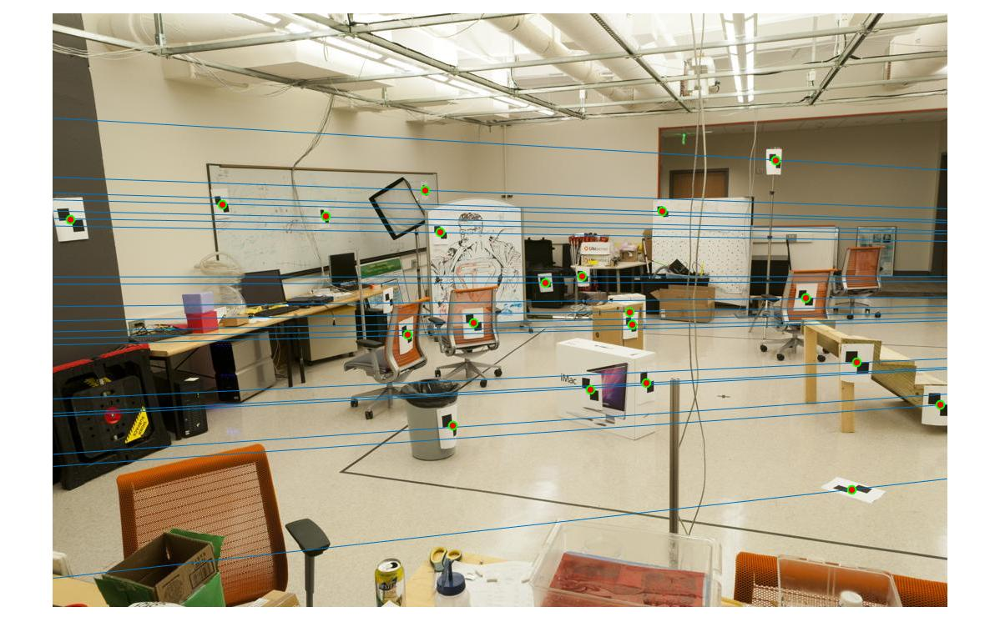 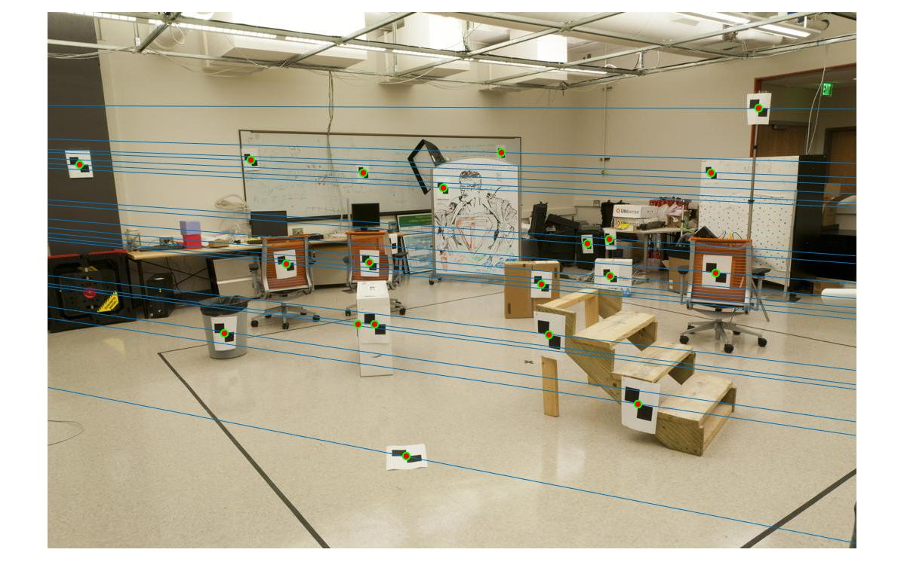
function [ F_matrix ] = estimate_fundamental_matrix(Points_a,Points_b)
% Separate out the u values from the matrix Points_a
u = Points_a(:,1);
% Separate out the v values from the matrix Points_a
v = Points_a(:,2);
% Separate out the u' values from the matrix Points_b
u1 = Points_b(:,1);
% Separate out the v' values from the matrix Points_b
v1 = Points_b(:,2);
% Create a Matrix of ones (o) with the same length as that of the u vector
o = ones(size(u));
% Create a Matrix of ones (o) with the same length as that of the u' vector
o1 = ones(size(u1));
A = [u.*u1 v.*u1 u1 u.*v1 v.*v1 v1 u v o];
[~, ~, V] = svd(A);
F = reshape(V(:,9), 3, 3)';
% reduce to rank 2
[U, D, V] = svd(F);
F_matrix = U * diag([D(1,1) D(2,2) 0]) * V';
end
For part 3, I used RANSAC to find the best fundamental matrix by randomly sample interest points. In order to count how many inliers each fundamental matrix has, I computed the Sampson distance between all sample points with the fitting epipolar line. The Sampson distance has a better error measurement since it is a first-order approximation to the geometric error. I did a thousand iterations of RANSAC and picked a threshold of 0.01, so that the best number of inliers are between 50 to 100.
function [ Best_Fmatrix, inliers_a, inliers_b] = ransac_fundamental_matrix(matches_a, matches_b)
match_size = size(matches_a);
sample_size = 8;
numOfIter = 1000;
best_InlierNum = 0;
for i = 1 : numOfIter
% Randomly select 8 points
rand_sample = randsample(match_size(1), sample_size);
% Estimate the fundamental matrix
F = estimate_fundamental_matrix(matches_a(rand_sample, :), matches_b(rand_sample, :));
x1 = matches_a;
x2 = matches_b;
x2tFx1 = zeros(1,length(x1));
for n = 1:length(x1)
x2tFx1(n) = [x2(n,:) 1] * F * [x1(n,:) 1]';
end
o = ones(match_size(1), 1);
Fx1 = F * [x1 o]';
Ftx2 = F * [x2 o]';
% Compute the Sampson distance between all sample points with the fitting epipolar line.
d = x2tFx1.^2 ./ ...
(Fx1(1,:).^2 + Fx1(2,:).^2 + Ftx2(1,:).^2 + Ftx2(2,:).^2);
t = 0.01;
% Compute the inliers with distances smaller than the threshold
inlierIdx = find(abs(d) < t); % Indices of inlying points
inlierNum = length(inlierIdx);
% Update the number of inliers and fitting model if better model is found
if (inlierNum > best_InlierNum)
best_InlierNum = inlierNum;
best_InlierIdx = inlierIdx;
best_F = F;
end
end
inliers_a = matches_a(best_InlierIdx, :);
inliers_b = matches_b(best_InlierIdx, :);
Best_Fmatrix = best_F;
end
|
left image right image matching lines |
|
Accuracy: 100% ; threshold = 0.01 ; number of iteration = 1000; sample size = 8; 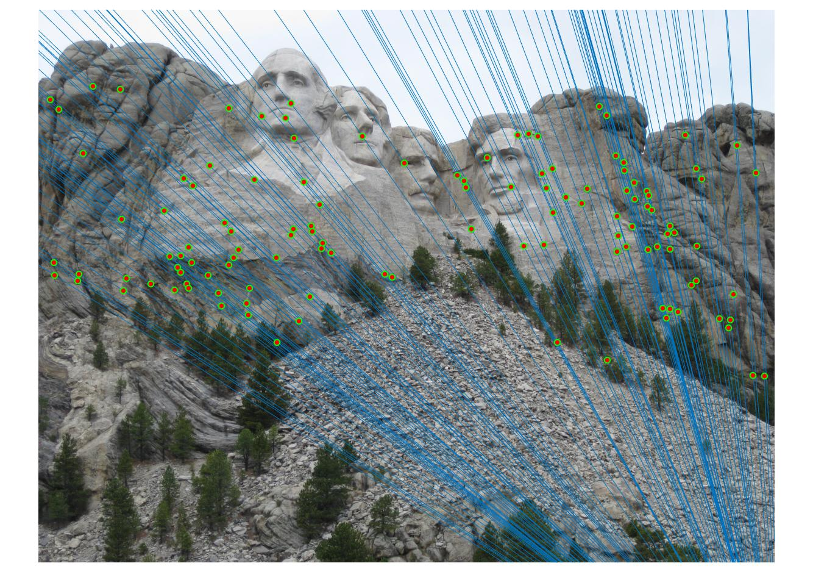 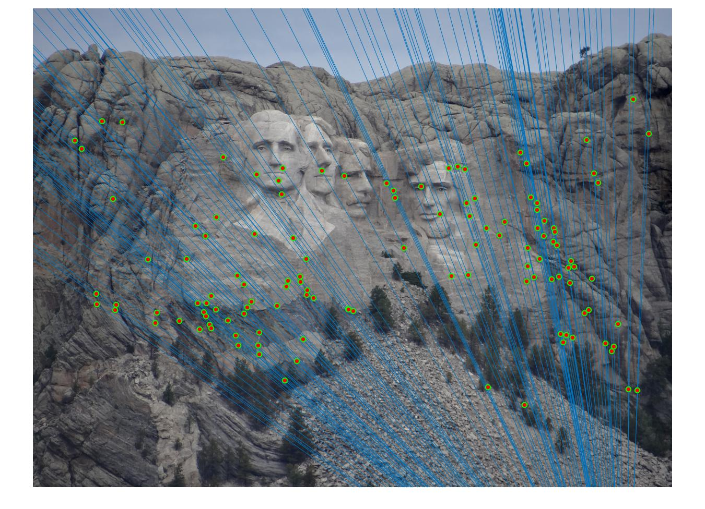 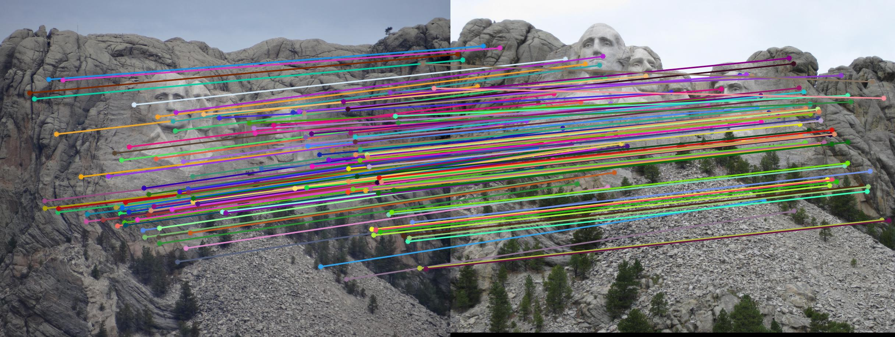 |
|
Accuracy: 100% ; threshold = 0.01 ; number of iteration = 1000; sample size = 8; 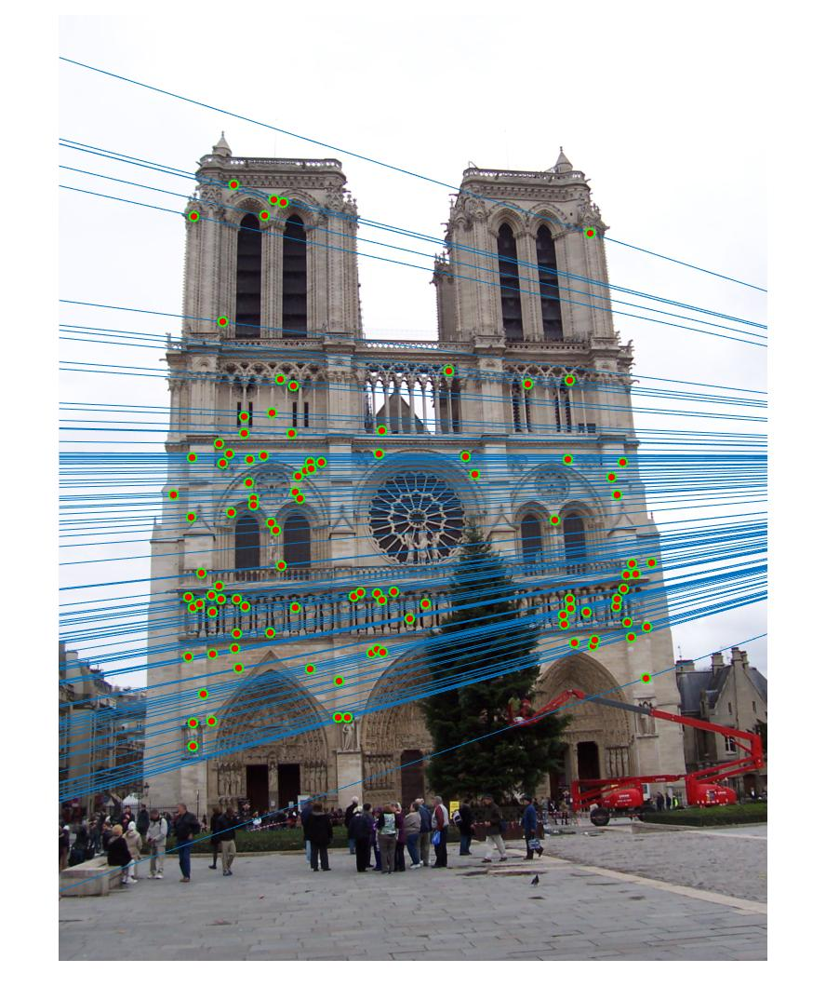 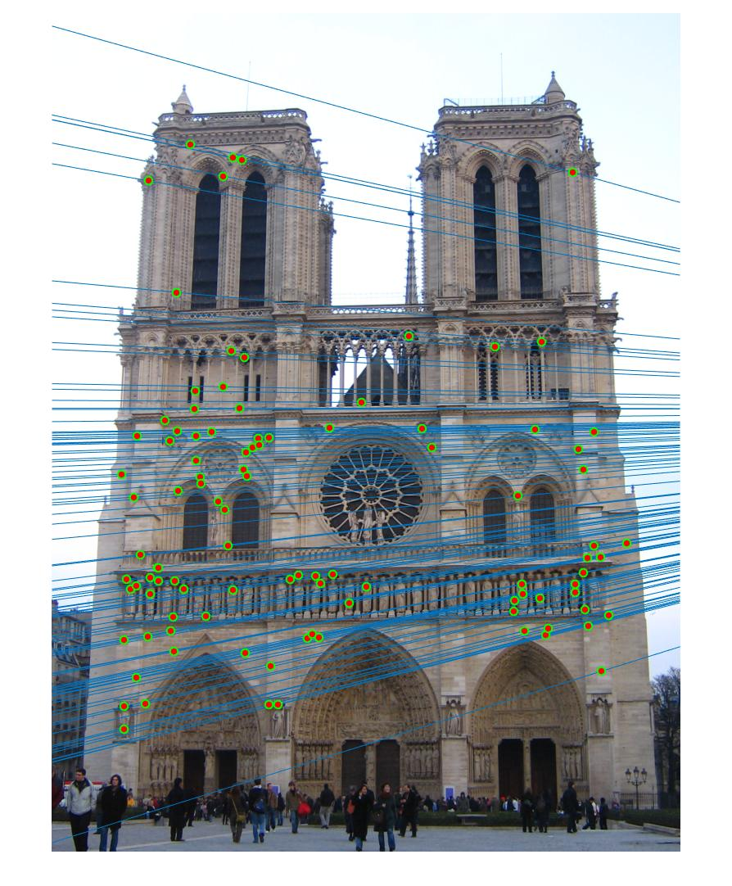 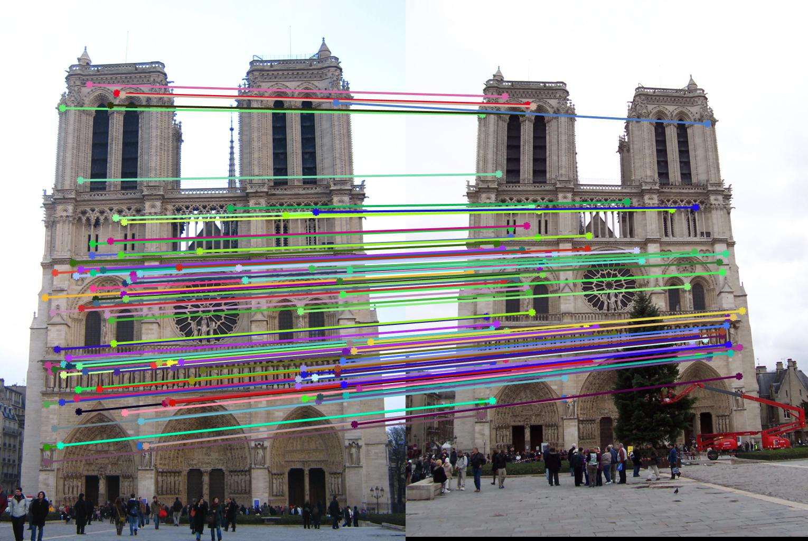 |
I improved the estimate of the fundamental matrix by normalizing the coordinates before computing the fundamental matrix. I computed scale s1 and s2 by estimating the standard deviation of each set of points, and the offset parameters are based on the width of the image. Then, I used the transform matrix T (the product of the scale and offset matrices) to normalize the coordinates. Following Hartley's approach[1], the image coordinate systems are shifted to the respective centroids.
function [ F_matrix ] = estimate_fundamental_matrix(Points_a,Points_b)
u = Points_a(:,1);
v = Points_a(:,2);
u1 = Points_b(:,1);
v1 = Points_b(:,2);
o = ones(size(u));
m1 = [u v o];
m2 = [u1 v1 o];
pic1_width = 1224;
pic2_width = 1208;
% The transform matrix for normalization
s1 = 1 / sum(std(m1));
s2 = 1 / sum(std(m2));
scale1 = [s1 0 0;
0 s1 0;
0 0 1];
scale2 = [s2 0 0;
0 s2 0;
0 0 1];
offset1 = [1 0 -pic1_width/2;
0 1 -pic1_width/2;
0 0 1];
offset2 = [1 0 -pic2_width/2;
0 1 -pic2_width/2;
0 0 1];
# transformation matrix
T1 = scale1 * offset1;
T2 = scale2 * offset2;
% normalized data
x1 = T1 * m1';
x2 = T2 * m2';
x1 = [x1(1,:)' x1(2,:)'];
x2 = [x2(1,:)' x2(2,:)'];
% solve Af=0
A=[x1(:,1).*x2(:,1) x1(:,2).*x2(:,1) x2(:,1) x1(:,1).*x2(:,2) x1(:,2).*x2(:,2) x2(:,2) x1(:,1) x1(:,2), o];
[~, ~, V] = svd(A);
F = reshape(V(:,9), 3, 3)';
[U, D, V] = svd(F);
F = U * diag([D(1,1) D(2,2) 0]) * V';
% Denormalize F
F_matrix = T2' * F * T1;
end
Normalizing the coordinates seems to make this pair work much better, increasing the accuracy from 85% to 100%. For example, in the first image(without the feature), the points on the gate and on the sky are incorrectly matched to something else. After running the program several times, I observed that the results are pretty unstable and noisy. After applying the normalization, the points on two pictures are perfectly matched and the distribution of matched points become much even and stable.
|
left image right image matching lines |
|
Using original F, Accuracy: 85% ; threshold = 0.01 ; number of iteration = 1000; sample size = 8; 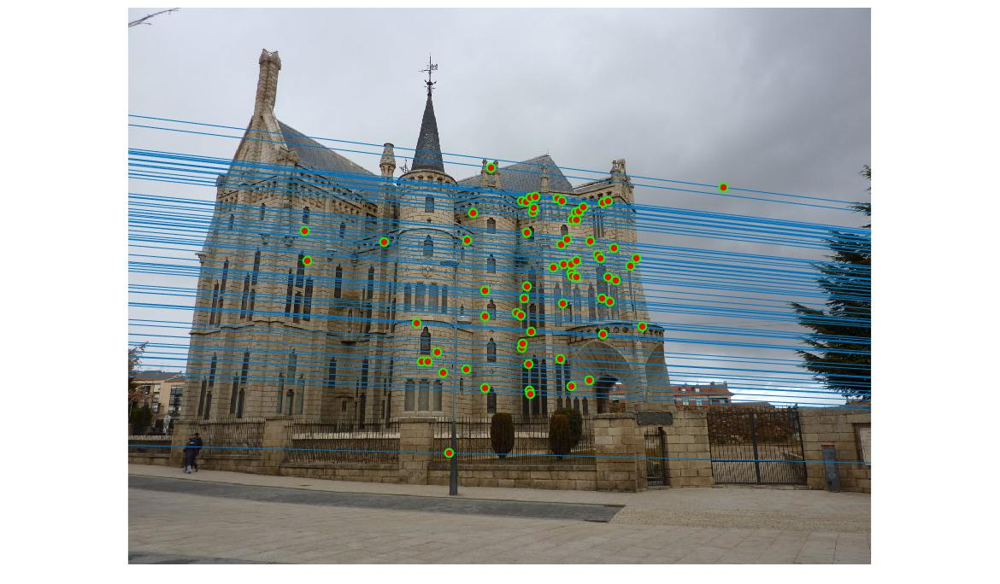 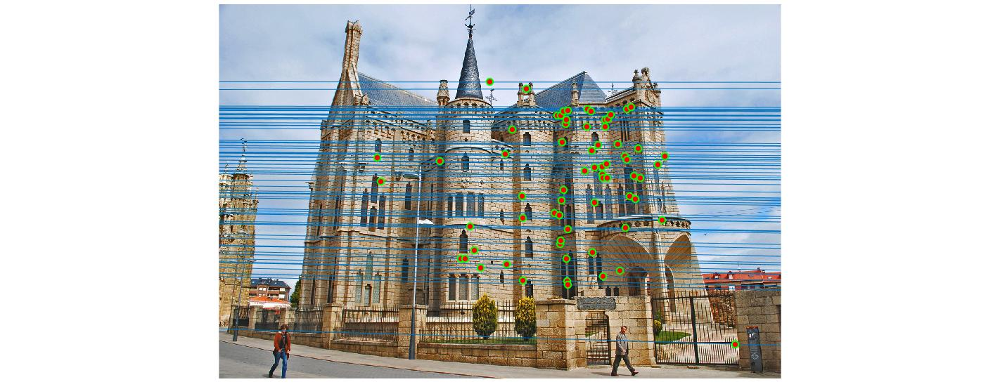 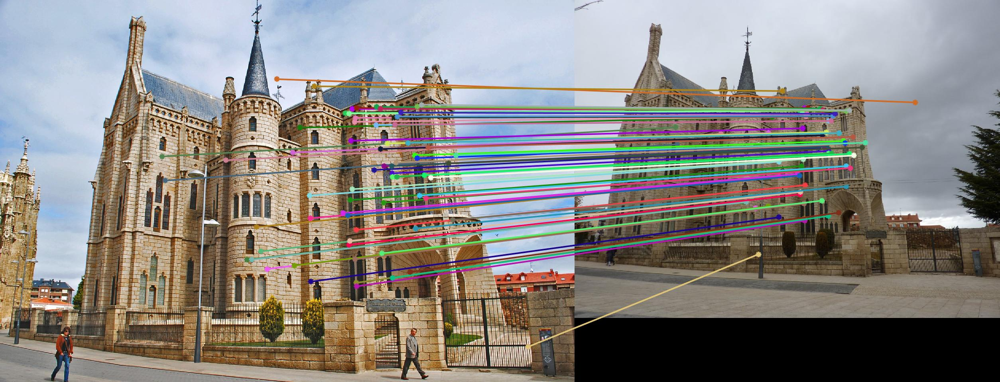 |
|
Using normalized coordinates and F, Accuracy: 100% ; threshold = 0.01 ; number of iteration = 1000; sample size = 8; 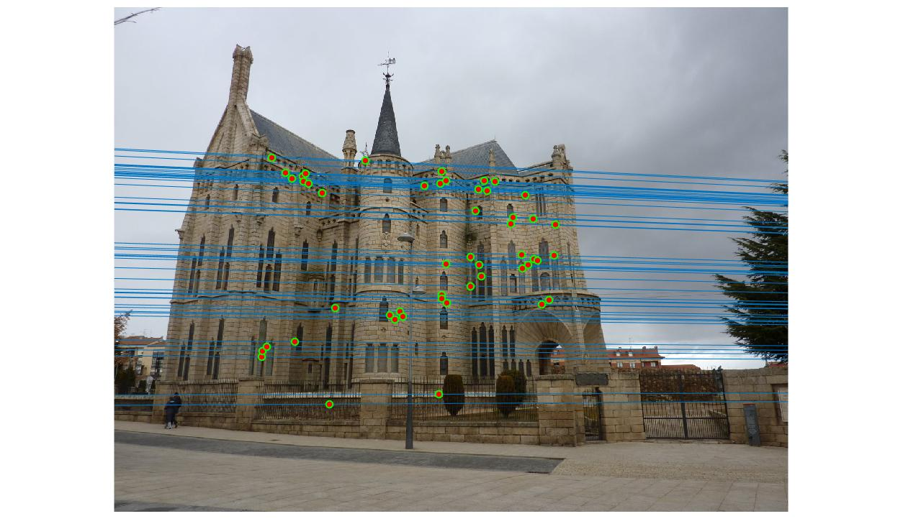 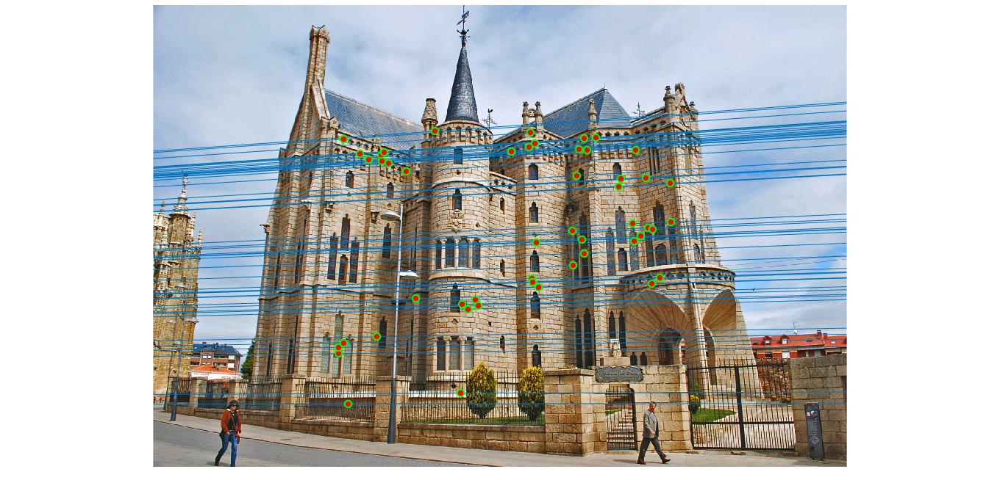 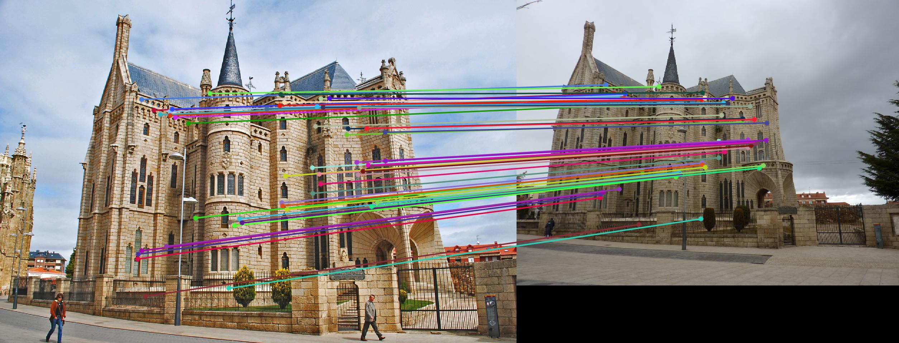 |